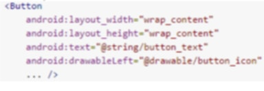

I. User Interface Components
A. What is a User Interface?
- Basically, the "face" of a program or application.
- It is everything that a program user can see and/or interact with.
B. User Interface Element Builder Objects
- The View Object draws something on the screen that the user can interact with.
- The View Group Object is an object that holds other View and/or ViewGroup objects for defining the layout of the interface.
C. Common User Interface Components
- The App Bar (or Action Bar) provides visual structure and interactive elements that are familiar to users. Its functions are providing a dedicated space for app identity, indicating the user's location in the app, access to important actions in predictable ways, and support for navigation and view-switching.
- The Dialog is a small window that prompts the user to make a decision or enter additional information. It does not fill the screen and is usually used to require users to take an action before proceeding.
- Notifications are messages that are displayed outside of the application's normal interface. The notification first appears as an icon in the notification area, located at the topmost hidden tab of your device screen. The details of the notification may be seen by opening the notification drawer, by dragging the notification area downward via finger swiping.
- Toasts are small pop-ups that provide simple feedback about an operation. The current activity is not interrupted since it only fills the amount of space required for the message.
• Using the Button class with the android:drawableLeft attribute creates a button with both an icon and text. This places the icon at the leftmost side of the button, beside the text:
